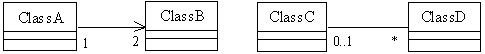
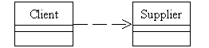

Парадигмы программирования. Основы объектно-ориентированного подхода
1 Теоретическая часть
1.1 Парадигмы программирования
Парадигма программирования (programming paradigm) – это совокупность идей и понятий, определяющих стиль написания компьютерных программ. Это способ концептуализации, определяющий организацию вычислений и структурирование работы, выполняемой компьютером.
Первоначальный подход к программированию не основывался какой-либо методологии. Программа состояла из последовательно выполняемых команд, а также меток, условного и безусловного перехода. Современная методология программирования включает большое количество парадигм, наиболее распространенными из которых являются следующие:
- Императивное программирование (imperative programming) описывает процесс получения результатов как последовательности инструкций изменения состояния программы.
- Функциональное программирование (functional programming) рассматривает вычисление как последовательность вызовов функций без сохранения состояния приложения.
- Структурное программирование (structured programming) определяет действия программы, которые необходимо принять для достижения желаемого результата.
- Процедурное программирование (procedural programming) предусматривает функциональный подход с хранением состояния программы.
- Модульное программирование (modular programming) предусматривает разделение программы на независимые логические и физические части, которые могут самостоятельно обрабатываться.
- Компонентное программирование (component-based programming) предусматривает сохранение модульной структуры программного обеспечения при выполнении программы.
- Объектно-ориентированное программирование (ООП, object-oriented programming) организует программу как совокупность объектов (структур данных, состоящих из полей данных и методов), а также их взаимодействия.
- Прототипное программирование (prototype-based programming) – разновидность объектно-ориентированного программирования, реализованного не через классы, а через наследование объектов производится путём клонирования существующего экземпляра объекта (прототипа).
- Обобщенное программирование (generic programming) заключается в таком описании данных и алгоритмов, которое можно применять к различным типам данных, не меняя это описание.
- Событийно-ориентированное программирование (event-driven programming) – управления вычислениями определяется через события (асинхронный ввод и сообщение из других программ или потоков и т.п.).
- Метапрограммирование (metaprogramming) предусматривает создание программ, которые порождают другие программы как результат своей работы, или программ, которые изменяют себя во время выполнения.
- Декларативное программирование (declarative programming) определяет логику вычисления без описания потока управления.
Существует также много других парадигм программирования – автоматное, аспектно-ориентированное, функционально-ориентированное и т. д.
1.2 Методология императивного программирования
1.2.1 Основные концепции
Императивное программирование – это парадигма программирования, согласно которой описывается процесс получения результатов как последовательность инструкций изменения состояния программы. Чаще императивное программирование, в котором определяется необходимая последовательность действий, противопоставляют декларативному программированию, которое предусматривает определение того, что мы желаем получить. В отличие от функционального программирования, императивная парадигма предполагает наличие состояния, которое может храниться, например, с помощью глобальных переменных.
Кроме первоначального (неструктурного) подхода, к императивному программированию относят процедурное и модульное программирование. Кроме того, в пределах объектно-ориентированной методологии императивный подход используют для реализации методов классов.
Для реализации "неструктурного" подхода в языке программирования необходимо наличие следующих средств:
- описание переменных;
- последовательное выполнение утверждений, в частности присвоение переменным определенных значений;
- метки;
- безусловный переход (
goto); - условный переход (
if...goto).
Вследствие отсутствия в языке Java оператора goto реализация такого "неструктурного" подхода на Java невозможна.
1.2.2 Реализация структурного подхода
Структурное программирование – это парадигма, предполагающая написание программы как набора блоков. Такими блоками являются ветвления, циклы, последовательность утверждений. Благодаря наличию циклов с предусловием, постусловием и с параметром программа может полностью быть реализована без условных и безусловных переходов.
Современные языки структурного программирования поддерживают отдельную область видимости блоков (внутри блоков могут создаваться локальные переменные, константы, типы и т.д.).
Реализация структурного программирования в Java базируется на использовании следующих конструкций:
- последовательное выполнение (аналогичное неструктурному программированию);
- разветвление – условное утверждение (
if,if...else) и переключатель (switch); - циклы: с предусловием (
while), с постусловием (do...while), с параметром (for); - программный блок – одно или несколько утверждений, взятых в фигурные скобки; блок определяет свою область видимости; внутри блока можно описывать переменные и константы; блоки можно вкладывать один в другой.
1.2.3 Реализация процедурного подхода
Реализация процедурного программирования предполагает наличие в языке программирования понятия подпрограммы (процедуры, функции), определяющей собственную область видимости и возвращающей определенный результат, а также средств вызова функций с последующим использованием этого результата. При вызове подпрограммы управление передается из точки вызова в код подпрограммы, а затем возвращается в точку вызова для выполнения последующих инструкций.
Для размещения данных отдельных подпрограмм (функций) в памяти компьютера, отведенной для приложения, организуется так называемый программный стек (стек вызовов) – область памяти, организованная по принципу стека (LIFO, last in – first out, "последним пришел – первым вышел"). В программном стеке хранится информация, необходимая для возврата управления из подпрограмм в вызывающую подпрограмму (основную программу), в частности, адрес точки возврата. Кроме адресов в программном стеке могут храниться аргументы подпрограмм, локальные переменные и другие временно создаваемые данные.
В языке Java процедурный подход реализован через использование статических функций, находящихся в области видимости классов.
1.2.4 Реализация модульного подхода
Модульное программирование предполагает разделение программного кода на отдельные модули, содержащие логически связанные элементы (типы, данные, подпрограммы). На логическом уровне языки поддерживают так называемые пространства имен. Пространство имен (namespace) – поименованная часть глобальной области видимости, в которой могут содержаться объявления и определения. Пространства имен помогают избежать конфликтов имен.
На физическом уровне в качестве модулей могут выступать библиотеки, сборки, объектные модули и т. д. (в зависимости от языка программирования и программной платформы).
Для реализации модульного подхода в Java используются пакеты, обеспечивающие группировку кода как на логическом, так и на физическом уровне.
1.3 Причины возникновения и преимущества объектно-ориентированного подхода
В семидесятые годы ХХ века индустрия разработки программного обеспечения столкнулась с вызовами, обусловленными существенным повышением сложности программных систем. Возникновение диалоговых систем с механизмами поведения привело к возникновению проблем, которые не могли быть решены традиционным процедурным путем. Возможность асинхронного ввода данных не согласовывалась с концепцией программирования, управляемого данными.
Программное обеспечение является по своей сути очень сложным. Сложность программных систем часто превосходит человеческий интеллектуальный потенциал. Как утверждает один из основателей объектно-ориентированной методологии Грейди Буч, эта сложность следует из четырех элементов:
- сложность предметной области;
- сложность управления процессом разработки;
- сложность обеспечения гибкости программного обеспечения;
- сложность управления поведением дискретных систем.
Мы можем преодолеть эти проблемы с помощью декомпозиции, абстракции и иерархии. Вместо функциональной декомпозиции, на которой построено процедурное программирование, объектно-ориентированная парадигма предлагает объектную декомпозицию. Кроме того, концепция классов позволяет обеспечить необходимый уровень абстракции данных и иерархичность представления объектов.
Впервые термины "объекты" и "объектно-ориентированный" в современном смысле
объектно-ориентированного программирования появились исследованиях группы искусственного интеллекта
Массачусетского технологического института в конце 1950-х - начале 1960-х годов. Понятия
"объект" и "экземпляр" появились в глоссарии, разработанном Иваном Сазерлендом в
1961 г. и связаны с описанием светового пера (Sketchpad).
1.4 Составляющие объектно-ориентированной методологии
Основными составляющими объектно-ориентированной методологии являются объектно-ориентированный анализ, объектно-ориентированное проектирование и объектно-ориентированное программирование.
Объектно-ориентированный анализ предполагает создание объектно-ориентированной модели предметной области. При этом речь идет не о проектировании классов программного обеспечения, а об использовании аппарата объектно-ориентированной методологии для представления реальной системы.
Объектно-ориентированное проектирование представляет собой процесс описания классов будущего программного обеспечения с использованием формальных методов (как правило, графических), а также определения взаимодействия классов и объектов. Отделение процесса проектирования от непосредственного кодирования призвано преодолеть сложность программного обеспечения за счет контроля над связями между отдельными сущностями и позволяет создавать ПО, допускающее коллективную разработку и повторное использование кода. Эффективность процесса проектирования повышается за счет использования проектных образцов (паттернов, шаблонов проектирования).
Объектно-ориентированное программирование является одной из парадигм программирования и предполагает непосредственное создание классов и объектов, а также определение связей между ними, выполняемое с использованием одного из языков объектно-ориентированного программирования.
1.5 Основные принципы и концепции объектно-ориентированной парадигмы
Основополагающим принципом объектно-ориентированного подхода является абстракция данных. Абстракция – это придание объекту характеристик, которые отличают его от всех других объектов, четко определяя его концептуальные границы. Основная идея состоит в том, чтобы отделить способ использования составных объектов от деталей их реализации в виде более простых объектов, подобно тому, как функциональная абстракция разделяет способ использования функции и деталей её реализации в терминах более примитивных функций, таким образом, данные обрабатываются функцией высокого уровня с помощью вызова функций низкого уровня.
Такой подход является основой объектно-ориентированного программирования. Это позволяет работать с объектами, не вдаваясь в особенности их реализации. В каждом конкретном случае применяется тот или иной подход: инкапсуляция, полиморфизм или наследование. Например, при необходимости обратиться к скрытым данным объекта, следует воспользоваться инкапсуляцией, создав, так называемую, функцию доступа или свойство.
Этот принцип реализуется через понятие класса. Класс - это структурированный тип
данных, набор элементов данных различных типов и функций для работы с этими данными. Объект
– это экземпляр класса.
Данные объекта (поля, fields, иногда - элементы данных, data members) -
это переменные, характеризующие состояние объекта.
Функции объекта (методы, methods) - это функции, которые имеют непосредственный
доступ к данным объекта. Иногда говорят, что методы определяют поведение объекта. В отличие от обычных
(глобальных) функций, необходимо сначала создать объект и вызвать метод в контексте этого объекта.
Объекты характеризуются жизненным циклом. Создание объектов предусматривает вызов специальной функции
инициализации данных - так называемого конструктора. Конструкторы вызываются
непосредственно после создания объекта в памяти. Большинство языков объектно-ориентированного
программирования поддерживает механизмы корректной ликвидации объектов и с применением деструкторов. Деструктор
- это специальная функция, которая вызывается непосредственно перед удалением объекта и
освобождает системные ресурсы, которые были заняты в процессе создания и функционирования объекта.
Можно назвать три основных понятия, лежащих в основе объектно-ориентированного программирования. Это инкапсуляция, наследование и полиморфизм.
Инкапсуляция (сокрытие данных) - одна из трех парадигм объектно-ориентированного
программирования. Содержание инкапсуляции заключается в сокрытии от внешнего пользователя деталей
реализации объекта. В том числе доступ к данным (полям), которые обычно описаны с модификатором private,
осуществляется через открытые функции доступа. В UML перед элементами класса (атрибутами и операциями)
можно указать из видимости с помощью символов + (открытый), - (закрытый) и
# (защищенный).
Наследование - это механизм создания производных классов от базовых. Создание
производного класса предусматривает расширение путем добавления новых полей (атрибутов) и методов. В C++
есть так называемые закрытое и защищенное наследование. Эти формы наследования позволяют ограничить
доступ к элементам базовых классов извне класса. В большинстве языков объектно-ориентированного
программирования поддерживается только открытое наследование – элементы при наследовании сохраняют
свою видимость. При этом закрытые элементы наследуются, но становятся недоступными для непосредственного
обращения в производных классах.
Полиморфизм - это свойство классов, согласно которой поведение объектов может
определяться на этапе компиляции, а на этапе выполнения. Классы, декларирующие идентичный набор функций,
но реализованные под конкретные специфические требования, имеют название полиморфных классов.
Подключение тела функции к точке ее вызова называется связыванием. Если оно происходит до начала выполнения программы, речь идет о раннем связывании. Этот тип связывания присущ языкам процедурного типа, таким как C или Pascal. Позднее связывание означает, что подключение происходит во время выполнения программы и в объектно-ориентированных языках зависит от типов объектов. Позднее связывание еще называют динамическим, или связыванием времени выполнения. Для реализации полиморфизма используется механизм позднего связывания.
В языках объектно-ориентированного программирования позднее связывание реализуется через механизм
виртуальных функций. Виртуальная функция (виртуальный метод, virtual method) - это
функция, определенная в базовом классе, и перекрытая в походных, так, что конкретная реализация функции
для вызова будет определяться во время выполнения программы. Выбор реализации виртуальной функции
зависит от реального (а не объявленного при описании) типа объекта. Таким образом, поведение ранее
созданных классов может быть изменено позже путем перекрытия виртуальных методов. Фактически
полиморфными являются классы, которые содержат виртуальные функции.
Некоторые языки (например, C++) поддерживают так называемый полиморфизм времени компиляции. Несмотря на то, что поведение объектов определяется при компиляции, использование шаблонов позволяет определить общее поведение шаблонных классов и специфицировать это поведение для конкретных типов.
С объектно-ориентированной парадигмой тесно связана концепция программирования, управляемого событиями, в рамках которого общая организация программы предполагает создание и регистрацию объектов с последующим получением и обработкой асинхронных событий и обмена сообщениями между объектами.
1.6 Унифицированный язык моделирования
1.6.1 Общие сведения
Унифицированный язык моделирования (Unified Modeling Language, UML) - это графическая
нотация для определения, описания, проектирования и документирования программных систем, бизнес-систем и
других систем различной природы, в первую очередь связанных с программным обеспечением. UML включает ряд
диаграмм для моделирования и проектирования сложных систем. Авторы языка – три видных исследователя
в области объектно-ориентированного анализа и проектирования Грэйди Буч (Grady Booch), Джеймс Рамбо
(James Rumbaugh) и Ивар Джекобсон (Ivar Jacobson). Графические элементы, определенные в UML,
представлены на диаграммах, которые отражают различную точку зрения на моделируемую систему.
Первая версия UML была принята консорциумом OMG (Object Management Group) в январе 1997 года в качестве международного стандарта. Утвержденная же в сентябре версия UML 1.1 была принята на вооружение основными компаниями – производителями программного обеспечения, такими, как Microsoft, IBM, Hewlett-Packard и производителями CASE-средств, которые реализовали поддержку UML в своих программных продуктах.
Авторы и разработчики UML представляют его как язык для определения, представления, проектирования и документирования программных систем, бизнес-систем и других систем различной природы. UML определяет нотацию, представляющую собой совокупность графических объектов, которые используются в моделях. Универсальный язык объектного моделирования UML не зависит от языков программирования и, вследствие этого, может поддерживать любой объектно-ориентированный язык программирования.
Формальная спецификация последней версии UML 2.0 опубликована в августе 2005 года.
1.6.2 Конструктивные блоки UML
Сущности являются основой модели. Привязку сущностей друг к другу обеспечивают отношения, а диаграммы группируют наборы сущностей. В UML представлены четыре типа сущностей: структурные (structural), поведенческие (behavioral), группирующие (group), аннотационные (annotational).
Графическое изображение отдельных структурных и поведенческих сущностей, принятое в UML, приводится ниже в связи с диаграммами, на которых эти сущности чаще всего изображаются. Вместе с тем, большинство элементов может присутствовать практически на всех диаграммах.
Единственным представителем группирующей сущности является пакет (package). Пакет – это механизм общего назначения для организации элементов в виде единой группы. Структурные, поведенческие и даже другие группирующие сущности могут быть помещены внутрь пакета.
Аннотации являются поясняющей и комментирующей частью UML. Единственным типом аннотационной сущности является примечание (note). Аннотация соединяется пунктирной линией с сущностью, к которой она относится:
Отношения являются основными связующими строительными блоками в UML. Имеется 4 типа отношений:
- зависимость (dependency);
- ассоциация (association); ее разновидностью является агрегирование (aggregation);
- обобщение (generalization);
- реализация (realization).
Третьим компонентом UML являются диаграммы.
Диаграмма в UML - это графическое представление набора элементов, изображаемое в виде
связанного графа с вершинами (сущностями) и ребрами (отношениями).
UML 1 предлагает следующий набор диаграмм для моделирования:
- структурные диаграммы (structure diagrams):
- диаграммы вариантов использования (use case diagrams) – для моделирования бизнес-процессов организации (требований к системе);
- диаграммы классов (class diagrams) – для моделирования статической структуры классов системы и связей между ними;
- диаграммы объектов (object diagrams) – для моделирования статической структуры экземпляров классов (объектов) и связей между ними;
- диаграммы поведения системы (behavior diagrams):
- диаграммы взаимодействия (interaction diagrams):
- диаграммы последовательности (sequence diagrams) и диаграммы коммуникаций (communication diagrams) – для моделирования процесса обмена сообщениями между объектами;
- диаграммы состояний (statechart diagrams) – для моделирования поведения объектов системы при переходе из одного состояния в другое;
- диаграммы деятельностей (activity diagrams) – для моделирования поведения системы в рамках различных вариантов использования, или моделирования деятельностей;
- диаграммы взаимодействия (interaction diagrams):
- диаграммы реализации (implementation diagrams):
- диаграммы компонентов (component diagrams) – для моделирования иерархии компонентов (подсистем) системы;
- диаграммы размещения (deployment diagrams) – для моделирования физической архитектуры системы.
UML 2 дополнительно предлагает следующие диаграммы:
- диаграммы пакетов (package diagrams) – для отображения зависимостей между пакетами, составляющими модель;
- диаграммы профилей (profile diagrams) – используются для визуализации механизмов расширения;
- диаграммы композитной структуры (composіte structure diagrams) – для моделирования внутренней структуры сущности;
- диаграммы обзора взаимодействия (іnteractіon overview diagrams) – диаграммы деятельности, узлами которых выступают диаграммы взаимодействия;
- диаграммы отображения во времени (tіmіng diagrams), или диаграммы синхронизации, используются для учета изменения состояния или значений параметров элементов при функционировании;
1.6.4 Диаграммы классов
Унифицированный язык моделирования (UML) предлагает графическое обозначение для класса в виде прямоугольника, разделенного, как минимум, на три части:
В приведенном примере Window – имя класса, атрибутам соответствуют поля (свойства) класса. Операциям соответствуют методы. Можно также указать типы атрибуты, типы параметров и результата операций:
Атрибуты определяют данные, описывающие экземпляр класса и определяют его состояние. В объектно-ориентированном программировании атрибуты отображаются в поля или элементы данных. Полный формат атрибута имеет следующий вид:
видимость имя : тип = значение_по_умолчанию
Видимость может быть следующей:
- закрытый (приватный) + открытый (публичный) # защищенный
Можно использовать сокращенный формат – без видимости, без типа, без начального значения, или вообще только имя.
Множественность может быть определена в квадратных скобках сразу после имени атрибута:
coords[3]: integer sons[0..*]: human
Операции определяют действия, которые можно применить к классу или его объекта. Операция описывается уровнем доступа (видимости), списком параметров и типом результата:
видимость имя(список_параметров) : тип
Параметры в списке отделяют друг от друга запятыми. Каждый параметр имеет следующий формат:
направление имя : тип = значение_по_умолчанию
Можно опустить все части спецификации операции, за исключением имени и круглых скобок.
Операции класса (статические) выделяются подчеркиванием.
UML 2 позволяет в случае необходимости добавлять четвертую часть к изображению класса. В этой части располагают пиктограммы вложенных классов.
Ассоциации – это наиболее общий тип связей между классами. С помощью ассоциаций связывают классы, объекты которых создаются и существуют независимо. В языках программирования обыкновенная ассоциация реализуется посредством указателей или ссылок. Ассоциация может быть направлена (один указатель или ссылка) или направленная (экземпляры обоих классов знакомы об экземплярах противоположного класса). Отношение типа "множественность" (multiplicity) показывает количество возможных связей между экземплярами классов. Явное указание множественности можно опускать.

Агрегирование – это специальная форма ассоциации, которая показывает, что сущность (экземпляр) содержится в другой сущности или не может быть создана и существовать без всеохватывающей сущности. Иногда используется более жесткая форма – композиция, которая предусматривает, что сущность полностью содержится в другой сущности. Агрегирование и композиция позволяют указывать множественность.
Отношение типа "зависимость" на диаграмме классов указывает, что зависимый класс пользуется функциональностью другого класса. На уровне языка программирования это может быть реализовано через вызов статических функций другого класса или создание временного объекта.

В UML для представления наследования используется связь типа обобщения (generalization). Стрелка специального вида ведет от более конкретного класса (производного) к более общему (базовому):
Для представления полиморфизма используются абстрактные классы и операции. Их имена записываются курсивом.
Для надписей на диаграммах классов можно использовать любой язык, но в тех случаях, когда диаграмма классов используется для генерации исходного кода, следует употреблять латинские буквы и преимущественно английскую мнемонику.
1.7 Языки объектно-ориентированного программирования
Первым языком программирования, в котором были предложены принципы объектной ориентированности, была Симула, который разработали Оле-Йохан Даль и Кристен Нюгорд в Норвежском вычислительного центре. В момент своего появления (в 1967 году), язык Симула предложил концепции объектов, классов, виртуальных методов и др., однако все это использовалось только в контексте задач имитационного моделирования. Впоследствии эти концепции были развиты Аланом Кэйем и Дэном Ингаллсом в языке Smalltalk. Именно он стал первым широко распространённым объектно-ориентированным языком программирования.
Язык программирования С++ был создан в 1983 году доктором Бьерном Страуструпом. Object Pascal появился в 1989 году, язык программирования Java был разработан в 1995 году. Существуют также C#, ADA, Oberon, Eiffel, Ruby, Python, Visual Basic, Modula-3, Object REXX и многие другие. Объектно-ориентированные средства присутствуют также в современных версиях PHP и JavaScript.
1.8 Прототипное программирование
Прототипное программирование – это вариант реализации объектно-ориентированного программирования, при котором вместо использования классов наследование производится путем клонирования существующего экземпляра объекта (прототипа). Каноническим примером прототип-ориентированного языка является язык Self. В дальнейшем этот стиль программирования был положен в основу таких языков программирования, как JavaScript, Lua, Io, REBOL и др.
Сторонники прототипного программирования считают, что этот подход обеспечивает лучший контроль над объектами и связан с меньшими накладными расходами, чем традиционный объектно-ориентированный подход, основанный на использовании классов.
2 Контрольные вопросы
- Что такое парадигма программирования?
- Какие существуют парадигмы программирования?
- В чем суть императивного программирования?
- В чем суть структурного программирования?
- В чем суть процедурного программирования?
- В чем суть модульного программирования?
- Чем обусловлено появление объектно-ориентированного подхода?
- Чем обусловлена сложность программного обеспечения?
- Какие основные составляющие объектно-ориентированной методологии?
- Что такое объектно-ориентированный анализ?
- Что такое объектно-ориентированное проектирование?
- Что такое объектно-ориентированное программирование?
- В чем заключается основной принцип объектно-ориентированного подхода?
- Какие основные концепции объектно-ориентированного подхода?
- Дайте определение класса.
- Чем класс отличается от объекта?
- Что такое UML?
- Как средствами UML представить алгоритм?
- Сколько конечных состояний может присутствовать на диаграмме деятельности?
- Что такое диаграмма классов?
- В чем суть инкапсуляции?
- Каким образом инкапсуляция моделируется в UML?
- В чем суть наследования?
- Каким образом наследование моделируется в UML?
- В чем суть полиморфизма?
- В чем различие между ранним и поздним связыванием?
- Что такое виртуальный метод?
- Как в UML обозначается абстрактная операция?
- В чем суть программирования, управляемого событиями?
- Что такое прототипное программирование?